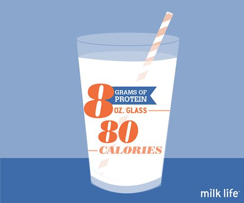
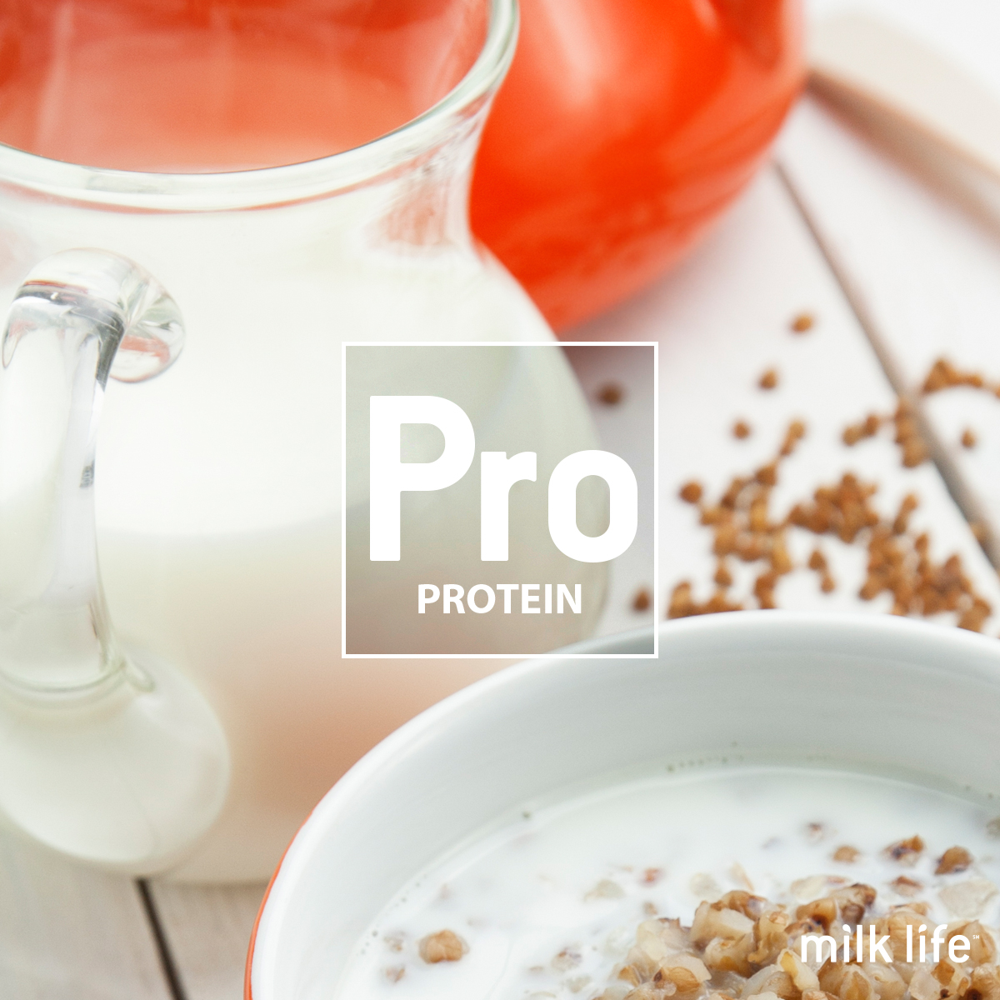
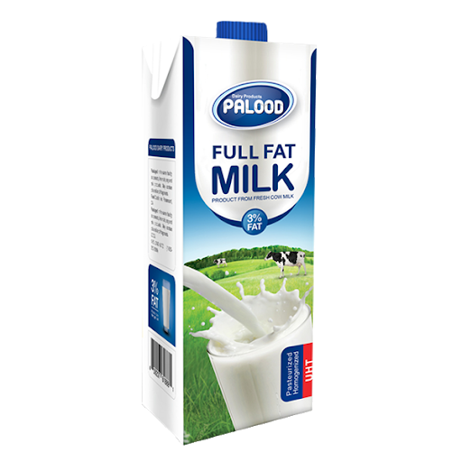
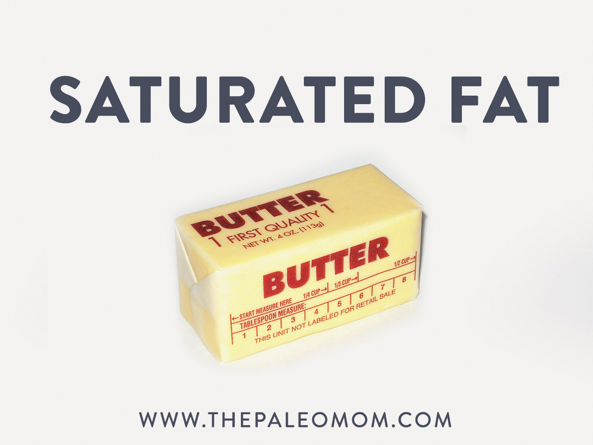
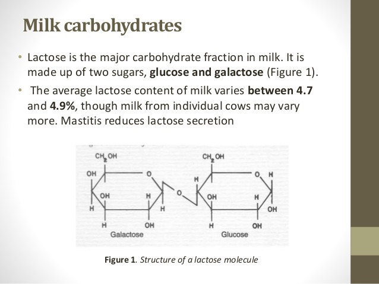
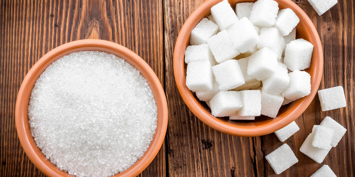
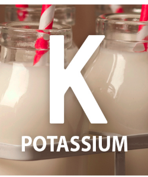
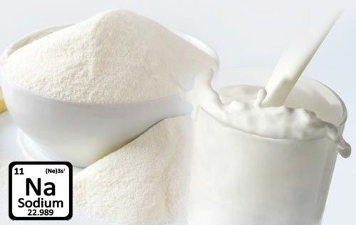
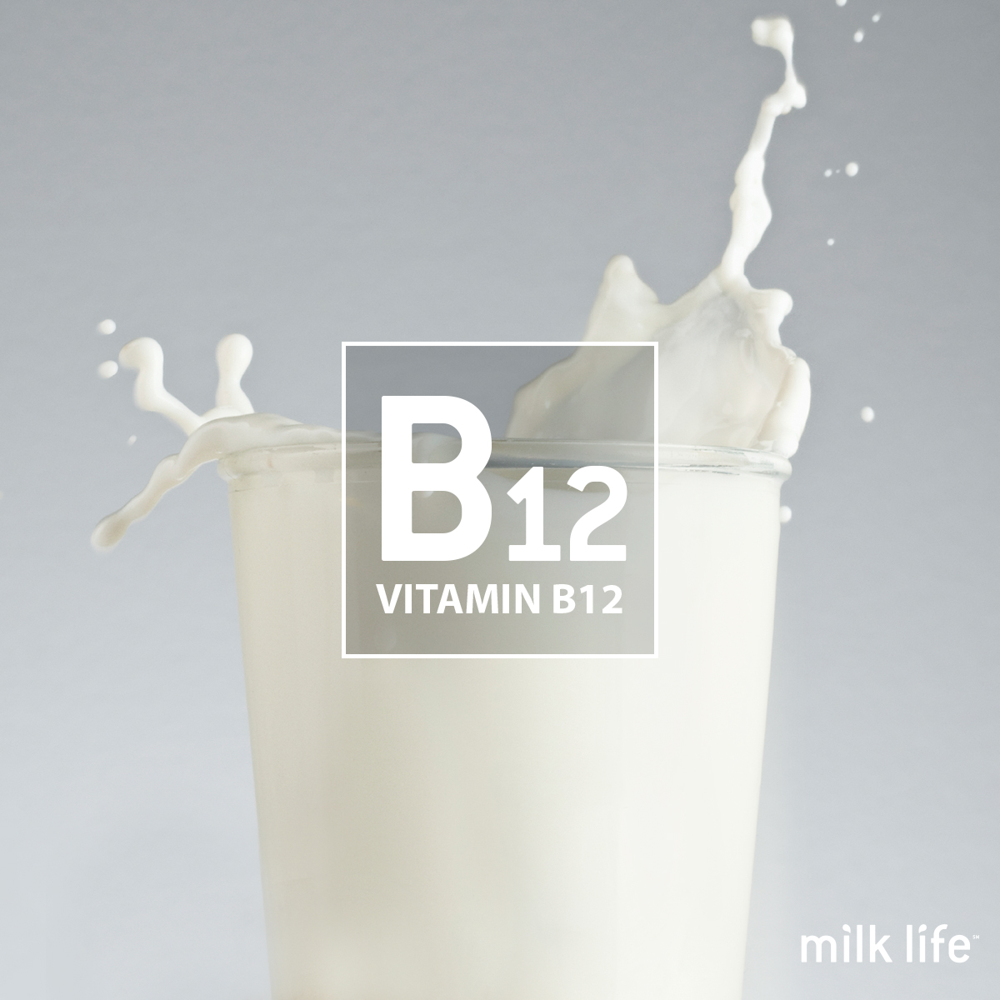
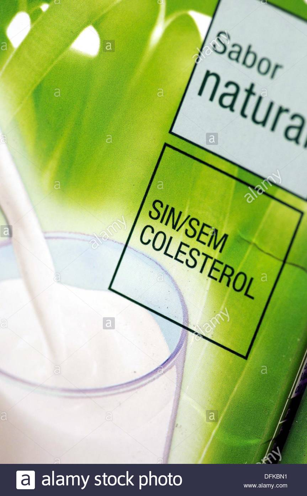

| 1 |
Calories(g) |
149 |
- healthy weight
- Strong body
|
 |
| 2 |
Protein(g) |
7.69 |
- The high-quality protein in milk helps build and maintain lean muscle
|
 |
| 3 |
Fat(g) |
7.93 |
- milk may positively affect your bones and blood pressure
|
 |
| 4 |
Saturated Fat(g) |
4.55 |
- fat dairy intake has a neutral or protective effect on heart disease risk
- weight loss
|
 |
| 5 |
Carbohyadrate(g) |
11.71 |
- They help fuel your brain kidneys heart muscles and central nervous system
- A carbohydrate-intensive diet can cause high blood sugar and unwanted weight gain
|
 |
| 6 |
Sugar(g) |
12.32 |
- the major source of energy for your body and an essential energy source for your brain
|
 |
| 7 |
Calcium(mg) |
276 |
- calcium helps build strong bones and teeth
- Milk is an excellent source of calcium that provides 300mg per 8-ounce serving
|
 |
| 8 |
Potassium(mg) |
322 |
- Milk is a source of potassium, which can help the blood vessels dilate and reduce blood pressure
|
 |
| 9 |
Sodium(mg) |
105 |
- Getting more potassium while also reducing sodium (salt) intake can lower blood pressure, reducing the risk of heart disease and stroke
|
 |
| 10 |
Vitamin B12(microgram) |
1.10 |
- This vitamin helps build red blood cells and helps maintain the central nervous system
|
 |
| 11 |
Vitamin A(IU) |
395 |
- This vitamin helps with eye health and maintaining a healthy immune system
|
 |
| 12 |
Vitamin D(IU) |
124 |
- this nutrient helps support healthy bones
- your muscles need it to move
- Nerves need it to carry messages between the brain and every body part
|
 |
| 13 |
Cholesterol(mg) |
24 |
- Periods of growth and development have specific nutritional requirement
|
 |